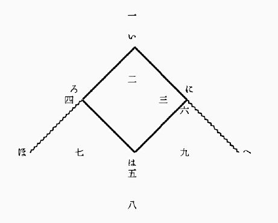

○
ベースボール に至りてはこれを行う者極めて少くこれを知る人の区域も
甚だ
狭かりしが近時第一高等学校と在横浜米人との間に
仕合ありしより以来ベースボールという語ははしなく世人の耳に入りたり。されどもベースボールの何たるやはほとんどこれを知る人なかるべし。ベースボールはもと
亜米利加合衆国の国技とも称すべきものにしてその遊技の国民一般に
賞翫せらるるはあたかも
我邦の
相撲、
西班牙の
闘牛などにも類せりとか聞きぬ。（米人のわれに負けたるをくやしがりて
幾度も仕合を
挑むはほとんど
国辱とも思えばなるべし）この技の我邦に伝わりし来歴は
詳かにこれを知らねどもあるいはいう元新橋鉄道局技師（
平岡
という人か）米国より帰りてこれを新橋鉄道局の職員間に伝えたるを
始とすとかや。（明治十四、五年の
頃にもやあらん）それよりして元東京大学（予備門）へ伝わりしと聞けどいかがや。また同時に工部大学校、
駒場農学校へも伝わりたりと覚ゆ。東京大学予備門は後の第一高等中学校にして今の第一高等学校なり。明治十八、九年来の
記憶に
拠れば予備門または高等中学は時々工部大学、駒場農学と仕合いたることあり。また新橋組と工部と仕合いたることもありしか。その後青山英和学校も
仕合に
出掛けたることありしかど年代は忘れたり。されば高等学校がベースボールにおける経歴は今日に至るまで十四、五年を費せりといえども（もっとも生徒は常に交代しつつあるなり）ややその完備せるは二十三、四年以後なりとおぼし。これまでは真の遊び半分という有様なりしがこの時よりやや
真面目の技術となり技術の上に進歩と
整頓とを現せり。少くとも形式の上において整頓し初めたり。すなわち
攫者が面と
小手（
撃剣に用うる面と小手のごとき者）を着けて
直球を
攫み
投者が
正投を学びて今まで九球なりし者を四球（あるいは六球なりしか）に改めたるがごときこれなり。次にその遊技法につきて多少説明する所あるべし。
（七月十九日）
○
ベースボールに要するもの はおよそ
千坪ばかりの平坦なる地面（
芝生ならばなお
善し）
皮にて包みたる小球（直径二寸ばかりにして中は
護謨、糸の
類にて
充実したるもの）
投者が
投げたる球を打つべき木の棒（長さ四尺ばかりにして先の方やや太く手にて持つ
処やや細きもの）
一尺四方ばかりの荒布にて坐蒲団のごとく拵えたる基三個
本基および
投者の
位置に置くべき鉄板様の物一個ずつ、
攫者の後方に張りて球を遮るべき網（高さ一間半、
幅二、三間位）
競技者十八人（九人ずつ敵味方に分るるもの）
審判者一人、
幹事一人（勝負を記すもの）等なり。
○
ベースボールの競技場 図によりて説明すべし。

直線
いほ及び
いへ（実際には線なし、あるいは白灰にて引く事あり）は無限に延長せられたるものとし直角
ほいへの内は無限大の競技場たるべし。
但し実際は
本基にて
打者の打ちたる球の達する処すなわち限界となる。
いろはには正方形にして十五間四方なり。勝負は
小勝負九度を重ねて完結する者にして小勝負一度とは
甲組（九人の味方）が
防禦の地に立つ事と
乙組（すなわち甲組の敵）が防禦の地に立つ事との二度の半勝負に分るるなり。防禦の地に立つ時は九人おのおのその専務に従い一、二、三等の位置を取る。但しこの位置は勝負中多少
動揺することあり。甲組競技場に立つ時は乙組は球を打つ者ら一、二人（四人を
越えず）の
外はことごとく後方に
控えおるなり。
（い）
本基
（ろ） 第一
基（基を置く）
（は） 第二基（基を置く）
（に） 第三基（基を置く）
（一）
攫者の位置（攫者の後方に網を張る）
（二）
投者の位置
（三）
短遮の位置
（四） 第一
基人の位置
（五） 第二基人の位置
（六） 第三基人の位置
（七）
場右の位置
（八）
場中の位置
（九）
場左の位置
○
ベースボールの勝負 攻者（防禦者の敵）
は一人ずつ本基（い）
より発して各基（ろ、は、に）
を通過し再び本基に帰るを務めとす、
かくして帰りたる者を廻了という。
ベースボールの勝敗は九勝負終りたる後ち、
各組廻了の数の総計を比較し多き方を勝とするなり。例えば「八に対する二十三の勝」というは乙組の廻了の数八甲組廻了の数二十三にして甲組の勝なりという意なり。されば競技者の任務を言えば
攻者の地に立つ時はなるべく廻了の数を多からしめんとし、
防者の地に立つ時はなるべく敵の廻了の数を少からしめんとするにあり。廻了というは正方形を一周することなれどもその間には第一
基第二基第三基等の関門あり各関門には番人（第一基は第一基人これを守る第二第三
皆しかり）あるをもって容易に通過すること
能わざる
也。
走者（通過しつつある者）ある事情のもとに通過の権利を失うを
除外という。（普通に
殺されるという）
審判官除外と呼べば走者（または
打者）は
直ちに線外に
出でて後方の
控所に入らざるべからず。除外三人に及べばその半勝負は終るなり。故に攻者は除外三人に及ばざる内に多く
廻了せんとし防者は廻了者を生ぜざる内に三人の除外者を生ぜしめんとす。除外三人に及べば防者代りて攻者となり攻者代りて防者となる。かくのごとくして再び除外三人を生ずればすなわち第一
小勝負終る。かれ
攻めこれ防ぎおのおの防ぐ事九度、攻むる事九度に及びて全
勝負終る。
○
ベースボールの球 ベースボールにはただ一個の球あるのみ。
しかして球は常に防者の手にあり。
この球こそこの遊戯の中心となる者にして球の行く処すなわち遊戯の中心なり。
球は常に動く故に遊戯の中心も常に動く。
されば防者九人の目は瞬時も球を離るるを許さず。
打者走者も球を見ざるべからず。
傍観者もまた球に注目せざればついにその要領を得ざるべし。今
尋常の場合を言わば球は
投者の手にありてただ
本基に向って投ず。本基の側には必らず
打者一人（攻者の一人）
棒を持ちて立つ。投者の球正当の位置に来れりと
思惟する時は（すなわち球は本基の上を通過しかつ高さ
肩より高からず
膝より低くからざる時は）打者必ずこれを
撃たざるべからず。棒
球に
触れて球は直角内に落ちたる時（これを
正球という）打者は棒を捨てて第一基に向い一直線に走る。この時打者は
走者となる。打者が走者となれば他の打者は直ちに本基の側に立つ。しかれども打者の
打撃球に触れざる時は打者は
依然として立ち、
攫者は後（一）にありてその球を止めこれを
投者に投げ返す。投者は幾度となく本基に向って投ずべし。かくのごとくして一人の打者は三打撃を試むべし。第三打撃の
直球（投者の手を離れていまだ土に触れざる球をいう）
棒と触れざる者
攫者よくこれを
攫し得ば打者は
除外となるべし。攫者これを攫し能わざれば
打者は
走者となるの権利あり。打者の打撃したる
球空に飛ぶ時（遠近に関せず）その球の地に触れざる前これを攫する時は（何人にても可なり）その打者は除外となる。
（未完）
（七月二十三日）
○
ベースボールの球（承前） 場中に一人の
走者を生ずる時は
球の任務は重大となる。もし走者同時に二人三人を生ずる時は
更に任務重大となる。けだし走者の多き時は遊技いよいよ複雑となるにかかわらず球は終始ただ一個あるのみなればなり。今走者と球との関係を明かにせんに走者はただ一人
敵陣の中を通過せんとするがごとき者、球は敵の
弾丸のごとき者なり。走者は正方形（前回の図を参照すべし）の四辺を一周せんとする者にして一歩もこの線外に出ずるを許さずしかして
この線上において一たび敵の球に触るれば立どころに討ち死（
除外）
を遂ぐべし。
 ここに球に触るるというは防者の一人が手に球を持ちてその手を走者の身体の一部に触るることにして決して球を敵に投げつくることに非ず
ここに球に触るるというは防者の一人が手に球を持ちてその手を走者の身体の一部に触るることにして決して球を敵に投げつくることに非ず。もし投げたる球が走者に
中れば
死球といいて敵を殺さぬのみならずかえって防者の損になるべし

されば走者がこの危険の中に身を投じて
唯一の
塁壁と
頼むべきは第一第二第三の
基なり。
けだし走者の身体の一部この基（
坐蒲団のごとき者）
に触れおる間は敵の球たとい身の上に触るるも決して除外とならず。（この場合において基は
鬼事の
おかのごとし）故に走者はなるべく球の自己に遠かる時を見て
疾走して線を通過すべし。例えば走者第一基にあり、これより第二基に
到らんとするには
投者が球を取て本基（の
打者）に向って投ずるその
瞬間を待ち合せ球手を離るると見る時走り出すなり。この時
攫者はその球を取るやいなや直ちに第二基に向って投ずべく第二
基人はその球を取りて走者に触れんと
擬すべし。走者は
匆卒の際にも常に球の運動に注目しかかる時直ちに進んで険を
冒し第二基に入るか退いて第一基に帰るかを決断しこれを実行せざるべからず。第二基より第三基に移る時もまたしかり。第三基より
本基に回る時もまたしかり。
但第三基は第二基よりも攫者に近く本基は第三基よりも獲者に近きをもって通過せんとするには次第に危険を増すべし。
走者二人ある時は先に進みたる走者をまず
斃さんとすること防者が普通の手段なり。走者三人ある時はこれを
満基という。（一基に走者一人以上留まることを許さず故に走者は三人をもって最多数とす）満基の時打者が走者となれば今までの走者は
是非とも一基ずつ進まざるべからず。これ最も危険なる最も
愉快なる場合にしてこの時の打者の
一撃は実に勝負にも関すべく打者もし好球を
撃たば二人の
廻了を生ずることあり、もし悪球を撃たば三人ことごとく
立尽（あるいは立往生という）に終ることさえあるなり。とにかく走者多き時は人は右に走り左に走り球は前に飛び後に飛び局面
忽然変化して観者をしてその要を得ざらしむることあり。
球戯を観る者は球を観るべし。
○
ベースボールの防者 防禦の地にある者すなわち遊技場中に立つ者の役目を説明すべし。
攫者は常に
打者の後に立ちて
投者の投げたる球を受け止めるを務めとす。その最も力を
尽す処は打者が第三撃にして撃ち得ざりし時その
直球を
攫むと、走者の第二
基に向って走る時
球を第二
基人に投ずると、
走者の第三基に向って走る時球を第三基人に投ずると、走者の
本基に向って来る時本基に出てこれを
喰いとめると等なりとす。
投者は打者に向って球を投ずるを常務と
為す。その
正投の方、
外曲、
内曲、
墜落等種々ありけだし打者の眼を
欺き悪球を打たしめんとするにあり。この外投者は常に走者に注目し走者
基を離るること遠き時はその基に向って球を投ずる事等あり。投者攫者二人は場中
最枢要の地を
占むる者にして最も熟練を要する役目とす。
短遮は投者と第三基の中ほどにあり、打者の打ちたる球を
遮り止め直ちに第一基に向って投ずるを
務とす。この位置は打者の球の多く通過する道筋なるをもって特にこの役を置く者にして短遮の任また重し。第一基は走者を
除外ならしむるにもっとも適せる地なり。短遮等より投げたる球を攫み得て第一基を
踏むこと（もしくは
身体の一部を
触るること）走者より早くば走者は除外となるなり。けだし走者は本基より第一基に向って走る場合においては単に進むべくしてあえて退くべからざる位置にあるをもって球のその身に触るるを待たずして除外となることかくのごとき者あり。第二基人第三基人の役目は攫者等より投げたる球を攫み走者の身に触れしめんとする者にしてこの間に
夾撃等面白き現象を生ずる事あり。
場右、
場中、
場左のごとき皆打者の打ちたる
飛球を攫み（この時打者は除外となる）またはその球を遮り止めて第一基等に向いこれを投ぐるを役目とす。しかれども
球戯は死物にあらず防者にありてはただ敵を除外ならしむるを唯一の目的とするをもってこれがためには各人皆臨機応変の処置を取るを
肝要とす。防者は皆打者の球は常に自己の前に落ち
来る者と
覚悟せざるべからず。
基人は常に自己に向って球を投げらるる者と覚悟せざるべからず。
○
ベースボールの攻者 攻者は
打者と
走者の二種あるのみ。打者はなるべく強き球を打つを目的とすべし。球強ければ防者の前を通過するとも
遮止せらるることなし。球の高く
揚るは外観美なれども攫まれやすし。走者は身軽にいでたち、敵の手の下をくぐりて
基に達すること必要なり。危険なる場合には基に達する二間ばかり前より身を
倒して
辷りこむこともあるべし。この他特別なる場合における規定は一々これを列挙せざるべし。けだし一々これを列挙したりともいたずらに混雑を加うるのみなればなり。
○
ベースボールの特色 競漕競馬競走のごときはその方法甚だ簡単にして勝敗は
遅速の二に過ぎず。故に
傍観者には興
少し。
球戯はその方法複雑にして変化多きをもって傍観者にも面白く感ぜらる。
かつ所作の活溌にして生気あるはこの遊技の特色なり、
観者をして覚えず喝采せしむる事多し。但しこの遊びは遊技者に取りても傍観者に取りても多少の危険を
免れず。傍観者は
攫者の左右または後方にあるを
好しとす。
ベースボールいまだかつて訳語あらず、今ここに掲げたる訳語はわれの創意に係る。訳語妥当ならざるは自らこれを知るといえども匆卒の際改竄するに由なし。君子幸に正を賜え。
升 附記
（七月二十七日）